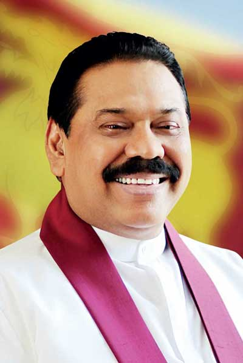

33
Shah Rukh Kha
Actor
Shah Rukh Khan (born November 2, 1965, Delhi, India) is an Indian actor known for his powerful screen presence and global appeal. Commonly known as SRK (an abbreviation of his full name), he is regarded as one of the icons of Indian cinema and an integral part of popular culture.
33
Mahinda Rajapaksa
Leader
Rajapaksa is a lawyer by profession and was first elected to the Parliament of Sri Lanka in 1970. He served as the leader of the Sri Lanka Freedom Party from 2005 to 2015. Rajapaksa was sworn in for his first six-year term as president on 19 November 2005. He was subsequently re-elected in 2010 for a second term
Elon Musk, the CEO of Tesla, first married Justine Musk in 2000. They had six children together before divorcing in 2008. He then married English actress Talulah Riley in 2010. They divorced and remarried, with their second divorce finalized in 2016

33
Shavendra Silva
SL Army
General LHSC Silva WWV RWP RSP VSV USP ndc psc MPhil, more popularly known as General Shavendra Silva was appointed as the 8th Chief of Defence Staff of the Democratic Socialist Republic of Sri Lanka effective from 01 June 2022.
33
Kumar Sangakkara
Cricketer
Kumar Sangakkara is the author's favorite sportsman. He was a cornerstone of Sri Lankan cricket for nearly 15 years, serving as captain. Sangakkara is considered one of the best batsmen in international cricket, having played over 500 matches and scored over 11,000 runs for Sri Lanka across Test and one-day formats.